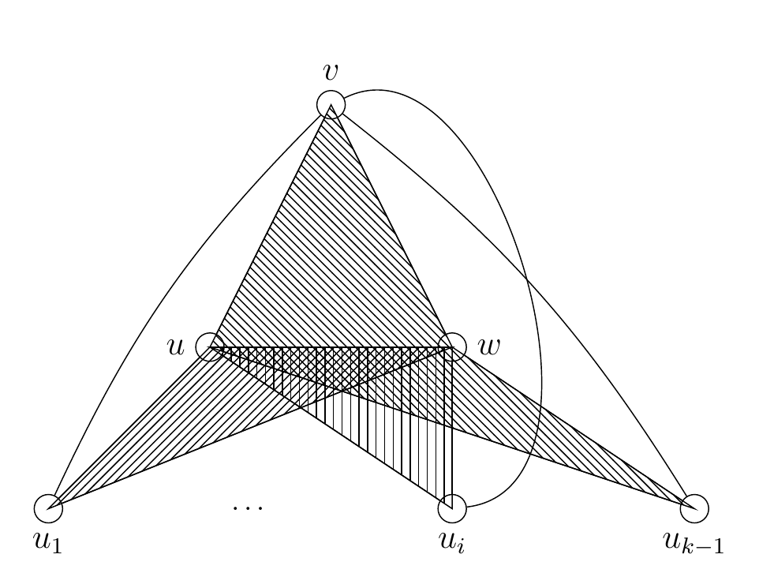
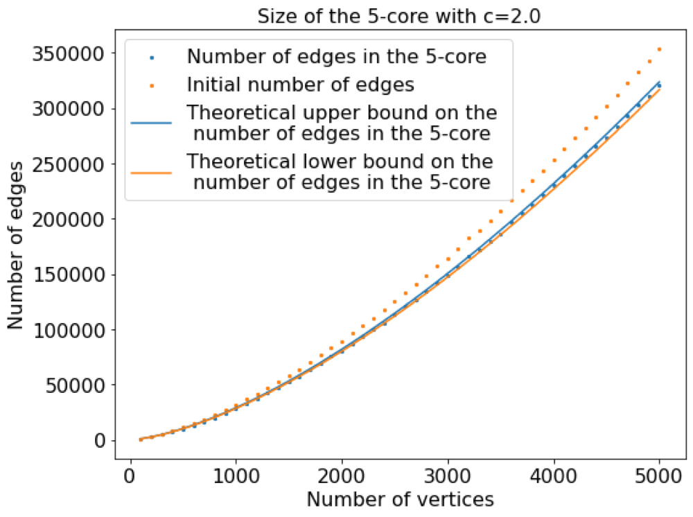
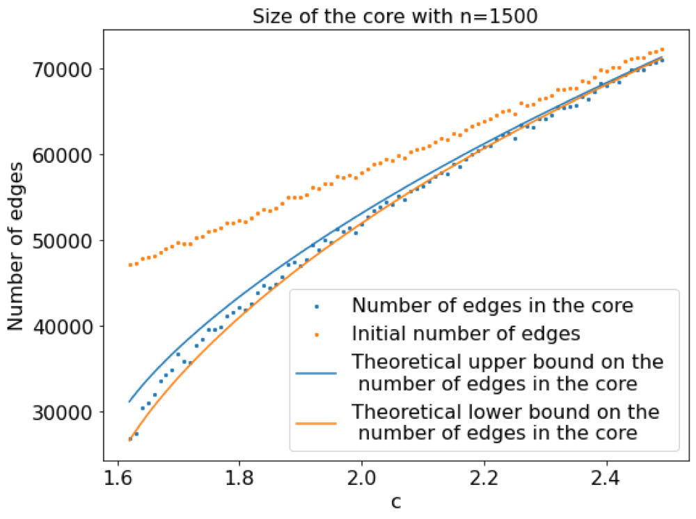

A central challenge in topological data analysis (TDA) is the size of the simplicial complexes involved: persistent homology becomes computationally intractable as the complexes grow. This work looks at how far a complex can be shrunk while provably keeping the structure it is meant to capture. For an introduction to TDA and to collapses, with pictures, see TDA explained.
Edge collapse (introduced by Boissonnat and Pritam, SoCG 2020) is a method to reduce the size of a simplicial complex while preserving its homotopy, and hence its homology. An edge is dominated by a vertex if every maximal simplex containing the edge also contains that vertex; a dominated edge can be removed, together with all the simplices containing it, without changing the homotopy type. Removing a maximal set of dominated edges is one phase, and running phases recursively reduces the complex to its core.
We consider the edge collapse process on the Erdős–Rényi random clique complex X(n, c/√n) on n vertices with edge probability p = c/√n, where c > √η₂ and η₂ = inf{ η : x = e−η(1−x)² has a solution in (0, 1) }. We show that after t iterations of maximal edge collapsing phases, the remaining subcomplex, or t-core, has asymptotically almost surely
at most (1 + o(1)) · C(n, 2) · p · (1 − (c²/3)(1 − (1 − γt)³)) edges, and
at least (1 + o(1)) · C(n, 2) · p · (1 − γt+1 − c²γt(1 − γt)²) edges,
where γt+1 = e−c²(1−γt)² and γ0 = 0. We also give explicit upper and lower bounds on the final core. If c < √η₂, the final core contains o(n√n) edges; if instead c > √(2 log n), the edge collapse process is no longer effective in reducing the size of the complex.
The proof is based on local weak convergence together with two new components: identifying the critical combinatorial structures that control the outcome of the edge collapse process, and a new concentration inequality for typically Lipschitz functions on random graphs, which is of independent interest. These are the first theoretical results proved for edge collapses on random (or non-random) simplicial complexes.
Critical complexes
The difficulty is that edge collapse is not a local operation. Deleting a single dominated edge can make as many as O(n²) other edges dominated, so the size of the t-core can in principle swing far from its expected value, and concentration inequalities for uniformly Lipschitz functions, such as McDiarmid's, do not apply. We show that this can only happen when the complex contains one of a specific family of subcomplexes, which we call critical complexes.

A critical complex of order k has so many edges on so few vertices that the expected number of copies in X(n, c/√n) is O(n−(k−4)/2): for large k they almost never appear. The effect of an edge collapse is therefore typically bounded, even though it is not bounded in the worst case.
A concentration inequality for typically Lipschitz functions
To turn “typically bounded” into a proof we need a concentration inequality that tolerates rare bad configurations. Let G ∼ G(n, p) with p ≤ 1/2, let m = C(n, 2) be the number of potential edges, and fix a “bad” graph H. Let f be a function of the graph such that flipping one potential edge changes f by at most C when neither graph contains a copy of H, and by at most D otherwise. Write B for the expected number of copies of H in G. Then for every T > B,
Pr{ |f − E[f]| > s } ≤ 2 · exp( − s² / ( 2 (C + DT/p) (mpC + mDT + s/3) ) ) + B/T.
The proof uses two coupled martingales on the same filtration, which stop at the same moment — when the conditional expected number of copies of H exceeds a threshold. One martingale controls the deviation of f through Freedman's inequality; the other controls the probability of ever stopping, through the Optional Stopping Theorem. Earlier stopped-martingale arguments bound the stopping probability by a union bound over all m steps, which gives mB/T in place of B/T (Warnke, 2016); removing that factor m is what makes the inequality usable here.
Taking H to be the 1-skeleton of a critical complex of order 20 (22 vertices, 60 edges) gives concentration of the size of the t-core around its expectation Y0: for any s ≥ 0,
Pr{ | e(t-core) − Y0 | ≥ s · n } ≤ 2 · exp( − s² · Θ(√n) ) + O(n−5.5).
Experiments
We ran experiments on Erdős–Rényi clique complexes X(n, c/√n) and plotted the size of the t-core against the number of vertices n ∈ [100, 5000] for different values of c and t. In a second set of experiments we varied c ∈ [1.6, 2.5] with the number of vertices fixed at n = 1500. The experiments validate the theoretical results.


Paper: J-D. Boissonnat, K. Dutta, S. Dutta, S. Pritam,
On Edge Collapse of Random Simplicial Complexes, SoCG 2024 ·
paper (LIPIcs, SoCG 2024)
Code: Edge-Collapse-On-Random-Clique-Complex
— Python simulations of the edge collapse process on Erdős–Rényi clique complexes,
estimating the size of the core to support the theoretical results.